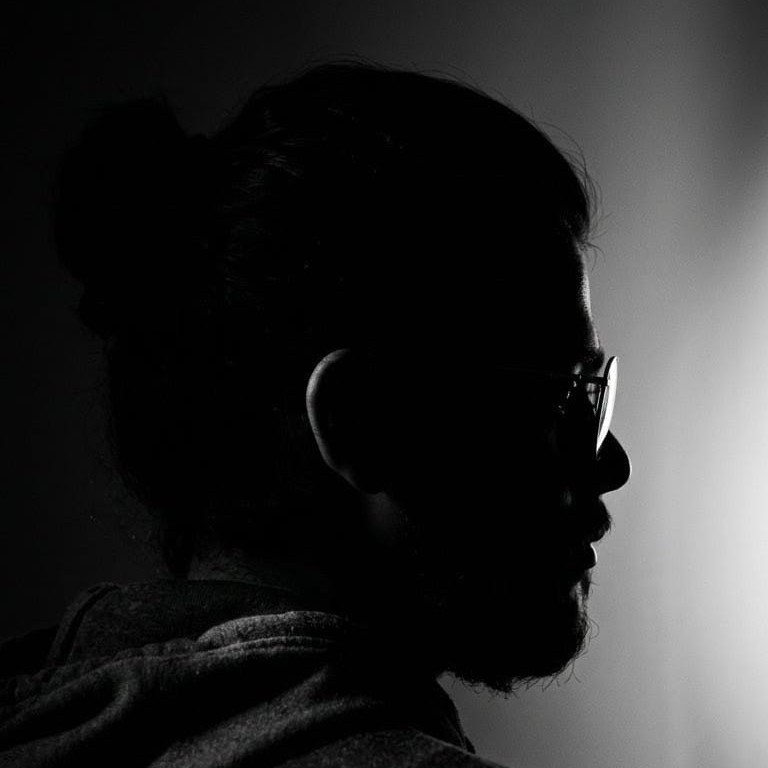

4× Zonals — 1st
4× District — 1st
1× State — 2nd
from Gandharva Mahavidyalaya · 2025
VISHARAD
Videos & performanceswatch the stage work →
imore
A personal note on music & its potential future
Read the note →Computational Music Systems
- Taan generator
- Swar lekhan
- Swarlipi
- Research paper
- Laykari-Taal Congruence
- & many more...
imore
The Serenadic Souls
SnP: Sing it Feel it Share it
- Spotify
- Production pipelines (prompts)
- Side artist profile
imore

PDPclick any section to explore